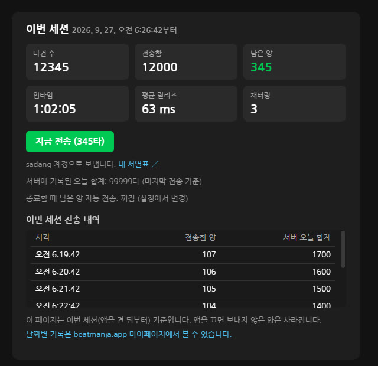
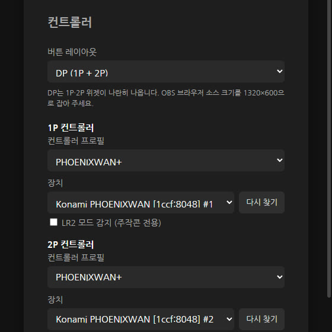
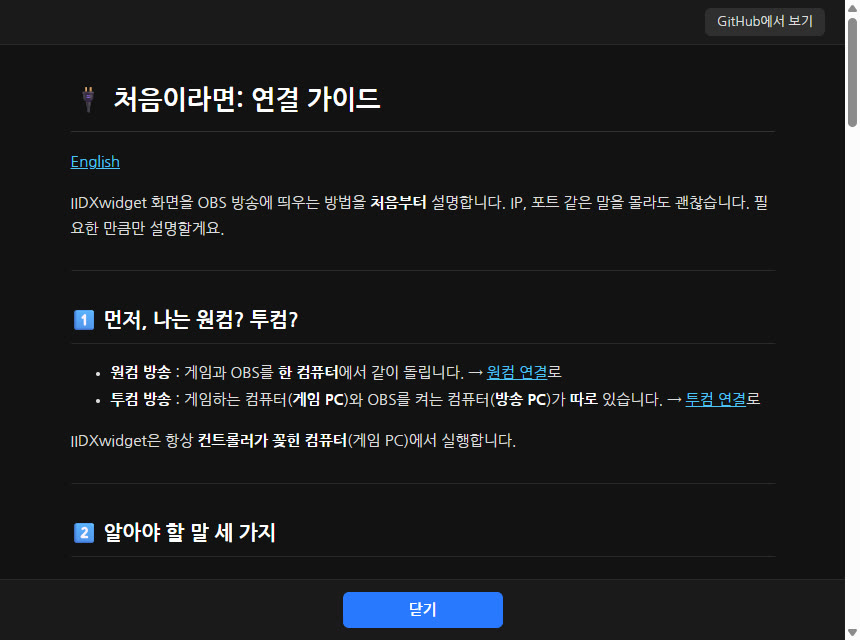
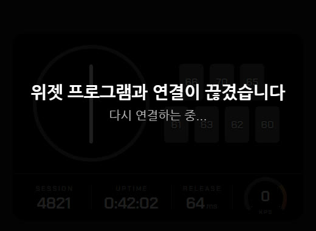
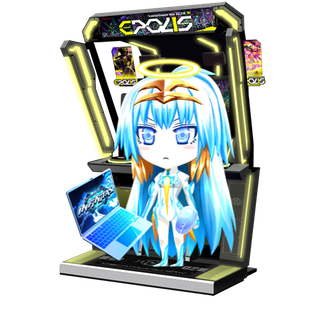

주소 한 줄이면 끝One URL and you're live
OBS 브라우저 소스에 주소만 넣으면 됩니다. 원컴도, 투컴도 됩니다. 처음 켜면 연결 방법을 차근차근 안내합니다. Paste one address into an OBS browser source. Works on one PC or two. First launch walks you through the setup.
OBS BROWSER SOURCE · WINDOWS · FREE
IIDX·BMS 컨트롤러 입력을 OBS에 그대로. 스크래치와 건반, 릴리즈, KPS 스피드미터까지 — 설치하고 주소 한 줄이면 끝입니다. Your IIDX/BMS controller, live on OBS. Turntable, keys, release timing and a KPS speedometer — install it and add one URL.
MIT 라이선스 · 소스 공개 · 한국어 / English MIT licensed · open source · Korean / English
OBS 브라우저 소스에 주소만 넣으면 됩니다. 원컴도, 투컴도 됩니다. 처음 켜면 연결 방법을 차근차근 안내합니다. Paste one address into an OBS browser source. Works on one PC or two. First launch walks you through the setup.
타건 수·업타임·릴리즈·KPS를 앱 본체가 계산해서 앱 창과 OBS에 똑같이 보냅니다. 앱을 다시 켜도 방송 화면이 알아서 다시 붙습니다. Presses, uptime, release and KPS are computed once and sent to both the app and OBS. Restart the app and the stream reconnects by itself.
릴리즈는 Rag 님 위젯과 같은 기준으로 계산하고, 채터링 감지로 스위치 상태까지 점검할 수 있습니다. Release is measured with the same rules as Rag's widget, and chatter detection tells you how your switches are doing.
MIT 라이선스로 코드가 모두 공개되어 있습니다. 키 입력은 인터넷으로 나가지 않습니다. MIT licensed, every line public. Your key input never leaves your PC.
스크래치 회전과 방향, 건반 입력을 실시간으로 그립니다. 아래 계기판에는 이번 세션의 타건 수, 업타임, 평균 릴리즈, KPS가 흐릅니다. 건반 위 숫자는 건반마다의 평균 릴리즈입니다. Turntable spin and direction plus every key press, drawn live. The dashboard shows this session's presses, uptime, average release and KPS; the number on each key is that key's average release.
가이드: 화면 구성 → Guide: what you see →KPS가 자동차 속도계처럼 올라갑니다. 빨간 영역에 들어서면 주황에서 빨강으로 달아오르고, 끝값에 닿으면 바늘이 살짝 떨립니다. IIDX / BMS ~★★ / BMS ★★~ 프리셋 중에 고르세요. KPS climbs like a car speedometer. In the red zone it heats from orange to red, and at the limit it trembles a little. Presets for IIDX, BMS up to ★★ and BMS ★★ and up.
가이드: KPS 스피드미터 → Guide: KPS speedometer →1P와 2P에 컨트롤러를 각각 연결합니다. 종류가 달라도 되고, 같은 컨트롤러 두 대라면 장치를 골라 쓰면 됩니다. 위젯은 하나로 이어지고 계기판은 가운데에 붙습니다. Connect a controller to 1P and 2P separately — different models are fine, and with two identical ones you just pick each device. The widget joins into one with the dashboard in the middle.
가이드: 버튼 레이아웃과 DP → Guide: button layout and DP →누른 뒤 떼기까지의 시간을 Rag 님 위젯과 같은 규칙으로 잽니다. 롱노트는 평균에서 빼고, 롱노트로 누르고 있는 건반은 따로 색을 칠합니다. Press-to-release time, measured with the same rules as Rag's widget. Long notes are left out of the average, and a key held as a long note gets its own color.
가이드: RELEASE 수치 → Guide: release value →배경, 건반, 입력, 글자, 롱노트 색을 바꾸고 배경을 투명하게 할 수 있습니다. 스크래치에는 원하는 이미지를 넣고, 회전 방향마다 다른 이미지도 됩니다. 바꾼 설정은 방송 화면에 바로 반영됩니다. Change the background, key, active, text and long-note colors, or go transparent. Put your own image on the turntable — even a different one per spin direction. Changes show up on stream instantly.
가이드: 위젯 외관 → Guide: widget appearance →스위치가 튀어서 생기는 이중 인식을 건반마다 셉니다. 흰 건반과 검은 건반을 따로 묶어 유독 튀는 건반만 빨갛게 표시하고, Rag / Sadang 두 가지 기준 중에 고를 수 있습니다. Counts switch bounce per key. White and black keys are compared separately and only the outliers light up red. Choose between the Rag and Sadang presets.
가이드: 채터링 감지 → Guide: chatter detection →
계정을 한 번 연결하면 버튼 하나로 이번 세션의 타건 수를 서열표 사이트에 보냅니다. 끌 때 자동으로 보낼 수도 있습니다. Connect your account once, then send this session's presses with one click — or automatically when you quit.
가이드 → Guide →
PHOENIXWAN+ · FPS EMP 2세대 · 키보드를 공식 지원하고, 그 밖의 컨트롤러는 버튼을 눌러 직접 매핑합니다. 연결된 장치를 골라 쓸 수 있습니다. Official support for PHOENIXWAN+, FPS EMP Gen2 and keyboards; map any other controller by pressing its buttons. Pick from the connected devices.
가이드 → Guide →
연결 방법, 설정, 릴리즈, 채터링 가이드를 앱 안에서 바로 봅니다. 늘 최신 내용으로 불러옵니다. Connection, settings, release and chatter guides inside the app, always loaded fresh.
연결 가이드 → Connection guide →
앱이 꺼져 있으면 방송 화면에 안내를 띄우고, 앱을 켜는 순간 다시 붙습니다. OBS를 건드릴 필요가 없습니다. If the app is off, the stream shows a notice; start the app and it reconnects. No need to touch OBS.
문제 해결 → Troubleshooting →http://127.0.0.1:8080/widget/을 넣습니다. (800×600, DP는 1320×600)
Add an OBS browser source with http://127.0.0.1:8080/widget/ (800×600, or 1320×600 for DP).
2022년에 IIDX와 BMS를 시작해 SP 발광개전(★★)을 취득한 BMS 플레이어입니다. IIDX 인피니타스를 위한 서열표 사이트가 없다는 점에 착안해 beatmania.app을 만들어 운영하고 있고, IIDXwidget도 그 연장선에서 개발했습니다. 방송하며 직접 쓰는 도구를 만듭니다.
A BMS player who started IIDX and BMS in 2022 and holds SP ★★ (発狂皆伝). Noticing that INFINITAS had no rank-table site of its own, Coldlapse built and runs beatmania.app. IIDXwidget grew out of the same work: tools made for real use on stream.
함께 만든 사람들Contributors: rhombus9 · 멘탈바사삭 · MellDa1024 · Ryochobi